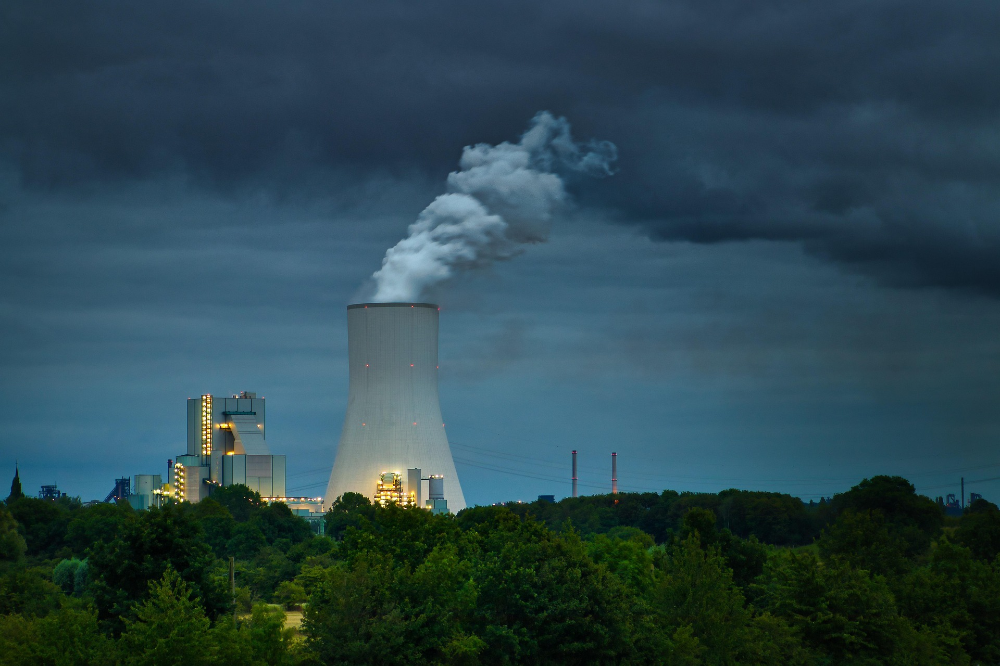
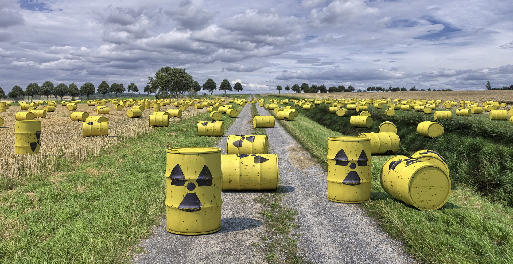
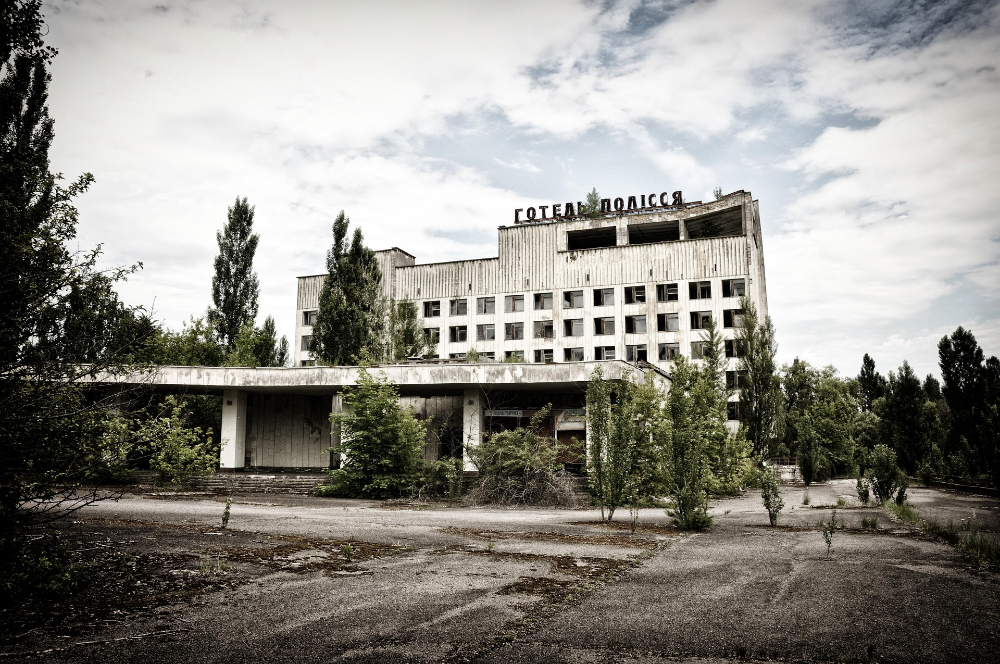
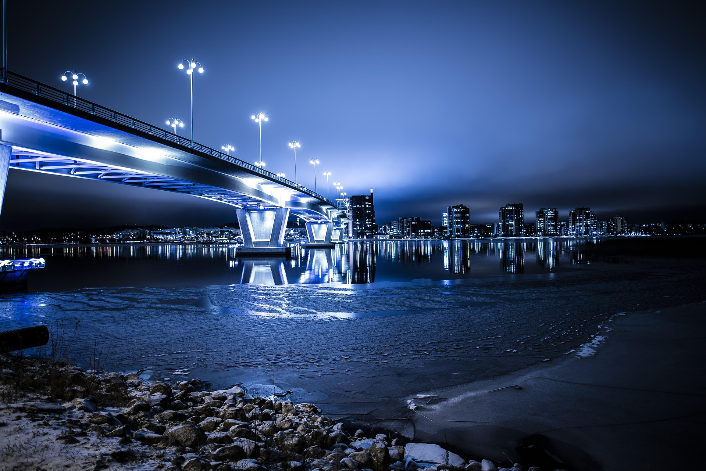

Hvordan fungerer et Atomkraftverk?
Et atomkraftverk er egentlig som en veldig avansert vannkoker, men i stedet for strøm eller gass bruker den radioaktive stoffer som drivstoff.
Hovedideen er å bruke energien som frigjøres når atomkjerner splittes, noe som kalles kjernefysisk fisjon.
Dette er hvordan det funker:
Drivstoffet: Man bruker ofte uran, som er et radioaktivt stoff. Når atomene i uran blir truffet av nøytroner, splitter de seg. Når dette skjer, frigjøres det enorme mengder varme.
Varm opp vann: Varmen fra fisjonen brukes til å varme opp vann i en stor beholder. Dette vannet blir til damp, og det er denne dampen som er greia.
Lag strøm: Dampen sendes inn i en turbin, som er en slags stor propell. Når dampen blåser gjennom turbinen, begynner den å spinne. Dette får en generator til å lage strøm.
Kjøle ned: Etter at dampen har gjort jobben sin, kjøles den ned og blir til vann igjen, som kan brukes på nytt. Kjølingen skjer ofte ved hjelp av store kjøletårn som slipper ut vanndamp, det er derfor du ser de svære røykskyene fra atomkraftverk på bilder. Hele poenget er å lage masse strøm uten å slippe ut CO₂, så det er ganske bra for miljøet sammenlignet med kull og gass. Men utfordringen er at vi må håndtere det radioaktive avfallet som blir igjen. Det kan være farlig i tusenvis av år, så det krever skikkelig lagring. Så ja, et atomkraftverk bruker basically atomer som sprenger seg selv for å koke vann og lage strøm.

Fordelene med atomkraftverk
Atomkraft har faktisk ganske mange fordeler, selv om det ofte får et dårlig rykte. Her er noen av de viktigste grunnene til at atomkraft er verdt å satse på: Ingen CO₂-utslipp Atomkraft slipper nesten ikke ut klimagasser når det produserer strøm. Det betyr at det ikke bidrar til global oppvarming på samme måte som kull- og gasskraftverk gjør. Det er en stor bonus for miljøet, spesielt nå som vi trenger å kutte utslipp raskt. Mye energi på liten plass Et lite atomkraftverk kan produsere enormt mye energi sammenlignet med andre energikilder. Du trenger for eksempel mye mindre land enn med vind- eller solkraft, noe som er bra når plass er begrenset. Stabil og pålitelig strøm I motsetning til sol og vind, som bare funker når det er sol eller vind, kan atomkraftverk produsere strøm 24/7. Det betyr at vi alltid har strøm, uansett vær. Liten mengde avfall Selv om avfallet fra atomkraft er radioaktivt, er mengden faktisk veldig liten sammenlignet med hva kullkraft slipper ut i lufta. Og med riktig lagring er det trygt.Langsiktig løsning Uranet som brukes i atomkraftverk, varer lenge. Vi har nok drivstoff til å holde det gående i mange år fremover, og det kan hjelpe oss mens vi bygger ut mer fornybar energi som sol og vind. Så ja, atomkraft er ikke perfekt, men det er en av de mest effektive og miljøvennlige måtene å produsere strøm på akkurat nå. Det kan gi oss ren og stabil energi samtidig som vi bekjemper klimaendringene. 
Avfall, en unik utfordring
Selv om atomkraft har mange fordeler, er det også noen utfordringer som gjør at folk er skeptiske. Her er noen av de største problemene:
1. Radioaktivt avfall. Når et atomkraftverk lager strøm, produseres det radioaktivt avfall. Dette avfallet kan være farlig for både mennesker og miljøet hvis det ikke håndteres riktig. Selv om mengden avfall er liten, tar det tusenvis av år før det slutter å være radioaktivt, og vi må finne sikre steder å lagre det i lang tid.
2. Risiko for ulykker. Selv om det skjer veldig sjeldent, kan atomulykker ha katastrofale konsekvenser. Eksempler som Tsjernobyl og Fukushima viser hvor alvorlig det kan bli hvis noe går galt. Moderne kraftverk er tryggere, men frykten for ulykker er fortsatt der.
3. Dyrt å bygge. Å bygge et atomkraftverk koster utrolig mye penger og tar lang tid. Selv om selve drifen er billig, kan det ta mange år før kostnadene blir verdt det. I tillegg kan nedlegging av gamle kraftverk også være dyrt.
4. Uran er ikke uendelig. Atomkraftverk bruker uran som drivstof, og selv om det er nok til mange år framover, er det ikke en uendelig ressurs. På et tidspunkt må vi finne noe annet.
5. Avhengihet teknologi og sikkerhet. Atomkraft krever avansert teknologi og ekstremt nøye overvåking. Det betyr at bare land med nok ressurser og kunnskap kan bruke det på en trygg måte. Mindre utviklede land kan slite med å håndtere det.
6. Politisk og offentlig motstand. Mange folk er skeptiske til atomkraft på grunn av frykten for ulykker og avfall. Dette kan gjøre det vanskelig å få politisk støtte til nye prosjekter, selv når vi trenger mer ren energi.
Miljøkonsekvenser av atomkraft
Atomkraft er kjent for å være en ren energikilde, men det har også noen miljømessige konsekvenser vi ikke kan ignorere. Her er en oversikt over de viktigste problemene:Radioaktivt avfall og miljøetAtomkraftverk lager radioaktivt avfall som må lagres på en trygg måte. Hvis det ikke håndteres skikkelig, kan avfallet lekke ut og skade naturen, forurense vann, jord og luft, og være farlig for både mennesker og dyr. Avfallet kan også forbli radioaktivt i titusenvis av år, så vi må finne løsninger som holder lenge. Vannforbruk og oppvarming av elver Atomkraftverk trenger mye vann for åkjøle ned reaktoren. Vannet som slippes ut igjen, kan være varmere enn vanlig, noe som kan påvirke økosystemene i nærliggende elver og innsjøer. Dette kan skade fisk og andre dyr som lever der. Risiko for naturkatastrofer Selv om det er sjeldent, kan ulykker som Tsjernobyl eller Fukushima forurense store områder i lang tid. Radioaktiv stråling kan gjøre hele områder ubeboelige og skape miljøproblemer som varer i generasjoner. Utslipp fra gruvedrift For å lage strøm med atomkraft, trenger vi uran. Utvinning av uran krever gruvedrift, som ofte fører til ødeleggelse av naturlandskap, store utslipp og forurensning. Dette påviker ofte lokalbefolkningen og dyrelivet i nærheten. Langvarige konsekvenser Selv om atomkraft ikke slipper ut CO₂ når det produserer strøm, betyr det ikke at det er uten miljøpåvirkning. Radioaktivt avfall må lagres i spesiele anlegg i hundretusenvis av år, noe som gjør det til en stor miljøutfordring på lang sikt.
Fremtiden for atomkraft
Fremtiden for atomkraft og avfallshåndtering. Når vi snakker om atomkraft og avfall, handler fremtiden mye om hvordan vi kan gjøre teknologien tryggere og mer bærekraftig. Her er noen viktige punkter om hva som kan ligge foran oss:
1. Nye reaktortyper. Det forskes på avanserte reaktorer, som såkalte "små modulære reaktorer" (SMR). Disse er mindre, tryggere og billigere å bygge. Noen av dem kan til og med bruke gammelt atomavfall som drivstoff, noe som hjelper oss med å bli kvitt farlig avfall samtidig som vi lager energi.
2. Bedre lagring av avfall. Et av de største problemene med atomkraft er hvordan vi lagrer avfall. Forskere jobber med å lage trygge, permanente løsninger, som dype underjordiske lagre. Disse kan holde avfallet isolert fra miljøet i tusenvis av år, så vi slipper å bekymre oss for lekkasjer.
3. Gjenvinning av avfall. Fremtiden kan handle mer om å bruke atomavfall på nytt i stedet for å lagre det. Det er teknologi under utvikling som kan bryte ned avfall og gjøre det mindre farlig, eller til og med bruke det som energi i spesielle reaktorer. Dette kan redusere mengden avfall dramatisk.
4. Fusjonskraft en gamechanger? Fusjonskraft er en annen type atomkraft som kan bli løsningen i fremtiden. I stedet for å dele atomer, som vi gjør nå, smelter fusjonskraft atomer sammen for å lage energi. Det produserer ingen farlig avfall og er mye tryggere, men teknologien er fortsatt under utvikling. Hvis vi får det til, kan det forandre alt!
5. Internasjonalt samarbeid. Atomkraft og avfall er et globalt problem, og mange land jobber sammen for å finne bedre løsninger. Internasjonale avtaler kan hjelpe oss med å dele teknologi og sikre at alt avfall håndteres riktig, uansett hvor det kommer fra.
Konklusjonen
Selv om atomkraftverk byr på utfordringer som radioaktivt avfall og risiko for ulykker, er fordelene betydelige, spesielt i kampen mot klimaendringer. De produserer store mengder energi uten CO₂-utslipp og gir stabil strømforsyning. Likevel er det avgjørende å finne bærekraftige løsninger for avfallshåndtering og sikre at teknologien brukes trygt. Med ny utvikling som små modulære reaktorer og forskning på fusjonskraft, kan atomkraft bli en enda viktigere del av fremtidens energimiks. Det er en kompleks, men lovende teknologi som kan bidra til en renere og mer bærekraftig verden. -A.M